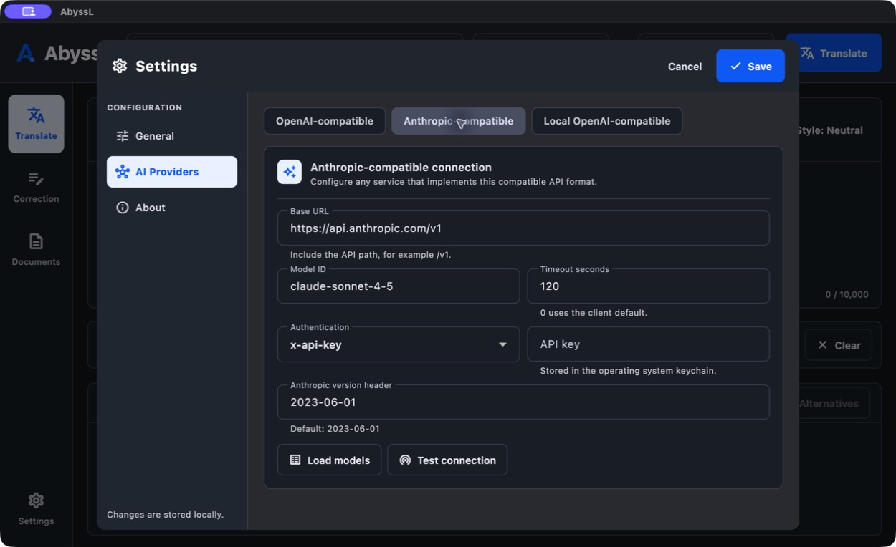

01
Übersetzen
AbyssL Desktop-App
AbyssL bündelt Übersetzung, Korrektur und Dokumentverarbeitung in einer Desktop-App – mit KI-Anbietern, Gateways und lokalen Servern über OpenAI- oder Anthropic-kompatible APIs.
OpenAI-kompatibel · Anthropic-kompatibel · Cloud oder lokal
Übersetzen
Korrigieren
Rechtschreibung, Grammatik, Ton und Stil lassen sich mit einer direkten Anweisung korrigieren oder vollständig neu formulieren.
Dokumente
Dateien oder Ordner ablegen, Korrektur und Übersetzung wählen, Ausgabeformat festlegen und Ergebnisse gesammelt exportieren.
Nahtloser Workflow
Offene Provider-Anbindung
Nutze kompatible Cloud-Anbieter, Gateways oder lokale Modelle. Basis-URL, Modell-ID, Authentifizierung und Timeout bleiben konfigurierbar.
Für Anbieter und Gateways, die das OpenAI-Format bereitstellen.
Für Anbieter und Gateways mit Anthropic-kompatiblen Messages-Endpunkten.
Konfiguration
Wähle ein API-Format, hinterlege deinen Endpunkt und teste die Verbindung direkt in AbyssL.

Produktiv bis ins Detail
Gib Kontext, Terminologie und gewünschte Stilregeln direkt mit.
Erzeuge Varianten, ohne den laufenden Arbeitskontext zu verlieren.
Übernimm markierten Text per systemweitem Tastenkürzel in AbyssL.
API-Schlüssel landen im Secure Storage, nicht in normalen Einstellungen.
FAQ
Anbieter setzen Kompatibilitätsstandards unterschiedlich vollständig um. Der integrierte Verbindungstest prüft deine konkrete URL, Authentifizierung und Modell-ID. Native Bedrock-, Vertex-AI- oder Azure-IAM-Verfahren benötigen gegebenenfalls ein kompatibles Gateway.
Ja, wenn der lokale Server einen ausreichend kompatiblen OpenAI-Chat-Completions-Endpunkt bereitstellt. Qualität und Funktionsumfang hängen vom gewählten Modell und Server ab.
Unterstützt werden TXT, Markdown, AsciiDoc, HTML, RTF, PDF mit extrahierbarem Text, DOCX und XLSX; ODT benötigt LibreOffice. Gescannte PDFs werden ohne OCR nicht erkannt.
Der aktuelle Entwicklungsstand und die Build-Anleitung liegen auf GitHub. Sobald ein offizielles Release verfügbar ist, wird die Website einen direkten, überprüften Download anbieten.
AbyssL
Open Source, transparent konfigurierbar und offen für kompatible KI-Anbieter.
Auf GitHub ansehen